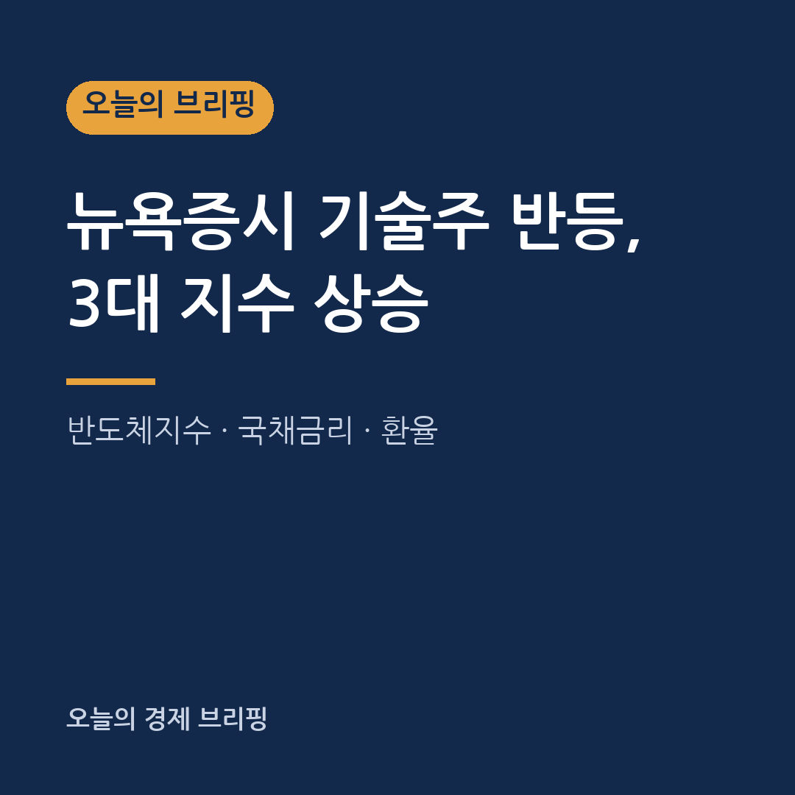
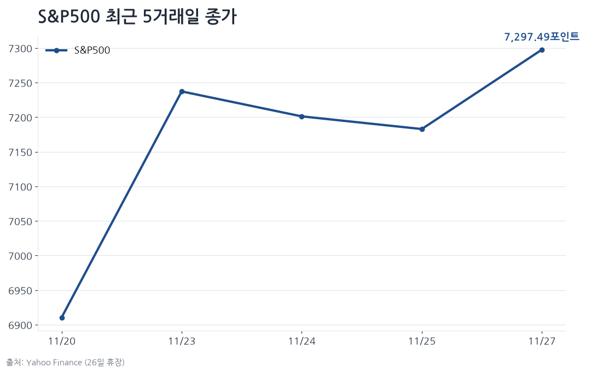

2026-11-28-0730-tistory 발행 키트 · 이 페이지는 검색에 노출되지 않습니다.
제목
카테고리
오늘의 브리핑태그
본문 (그림·표 포함)
휴대폰 블로그 앱에서는 그림이 같이 붙지 않을 수 있어요. 그때는 [글자만 복사] 후 아래 이미지를 저장해 [그래프1]·[표1] 자리에 첨부하세요.

핵심 결론부터 정리합니다. 11월 27일(현지시간) 뉴욕증시는 AI 투자 수익성 우려로 눌렸던 기술주가 반등하면서 나스닥·S&P500·다우가 모두 상승 마감했습니다. 반도체 업종의 상승 폭이 가장 컸습니다.
▶ 배경: 연휴 직후 거래
26일 추수감사절 휴장 뒤 열린 장이어서 비교 기준은 25일 종가입니다. 최근 증시는 AI 관련주의 급락과 반등이 반복되는 흐름이었고, 이번 반등은 그 연장선에 있습니다.
▶ 핵심 내용: 지수별 마감
뉴욕증시 지수별 마감 (11월 27일)
| 지수 | 종가 | 직전 종가(25일) | 등락률 |
|---|---|---|---|
| 나스닥 | 24,129.50 | 23,585.80 | +2.31% |
| S&P500 | 7,297.49 | 7,182.78 | +1.60% |
| 다우 | 50,774.94 | 50,182.95 | +1.18% |
| 필라델피아 반도체 | 9,186.71 | 8,774.86 | +4.69% |
출처: Yahoo Finance
나스닥은 24,129.50으로 2.31% 올랐고, S&P500은 7,297.49로 1.60%, 다우는 50,774.94로 1.18% 올랐습니다. 필라델피아 반도체지수는 9,186.71로 4.69% 상승했습니다.
최근 5거래일 흐름을 보면 S&P500은 20일 6,910.39에서 27일 7,297.49로 올라섰습니다.

주간 기준으로도 강세였습니다. S&P500은 한 주 동안 5.6% 올랐고, 다우는 4년 만에 가장 높은 주간 상승률을 기록했다고 보도됐습니다. 나스닥 주간 상승률은 6%를 넘었습니다.
▶ 영향: 움직임의 이유
첫째, AI 투자의 수익성을 둘러싼 우려가 완화되며 저가 매수가 유입됐습니다. UBS의 한 전략가는 매도세가 한계에 이르렀다는 징후가 많다고 진단했습니다.
둘째, 메모리 반도체주가 급반등했습니다. 마이크론이 7.34%, SK하이닉스 ADR이 7.38% 상승했고 샌디스크는 16%대 올랐습니다. 20일 하락분의 상당 부분을 회복했으나 이익 감소 우려는 해소되지 않았다는 평가가 함께 나왔습니다.
셋째, 변동성지수(VIX, 시장 불안 정도를 보여주는 지표)는 23.81로 전일보다 11.16% 내려 투자심리가 안정됐음을 시사했습니다.
▶ 환율·금리·유가
금리·환율·유가
| 항목 | 11월 27일 | 직전 값 | 변동 |
|---|---|---|---|
| 미 국채 10년물 금리(25일 대비) | 4.94% | 4.85% | +0.09%p |
| 원·달러 환율(26일 대비) | 1,333원 | 1,342.97원 | -9.97원 |
| WTI 유가(25일 대비) | 83.08달러 | 83.68달러 | -0.72% |
출처: Yahoo Finance
미 국채 10년물 금리는 25일 4.85%에서 4.94%로 상승했습니다. WTI는 배럴당 83.08달러로 0.72% 하락했고, 원·달러 환율은 1,333원으로 전일 1,342.97원보다 9.97원 낮아졌습니다.
▶ 확인할 점
첫째, 국내 반도체 대형주가 미국 반도체 급등에 연동되는지 확인할 필요가 있습니다. 둘째, 환율이 1,330원대로 내려온 점이 외국인 수급에 미칠 영향을 봐야 합니다.
셋째, 일부 보도는 다가오는 FOMC(미국 연방공개시장위원회, 통화정책 결정 회의)를 시장의 분수령으로 지목했습니다. 금리가 다시 오른 만큼 회의 전까지 변동성이 커질 수 있습니다.
▶ 정리
1. 11월 27일 뉴욕증시는 기술주 반등으로 3대 지수가 모두 상승했습니다.
2. 반도체지수가 4.69% 올라 상승을 주도했으나 이익 우려는 남아 있습니다.
3. 국채금리는 4.94%로 올랐고 환율은 1,333원으로 내렸습니다. 국내 반도체주와 환율 흐름을 확인하세요.
이미지 (개별 복사·저장)
출처 (본문 맨 아래에 붙여넣기 권장)
- 한국경제, AI 투자 우려 속 기술주 반등…나스닥 2.3% 상승 [뉴욕증시], https://www.hankyung.com/article/2026112857597 - 연합뉴스, 뉴욕증시, AI·기술주 반등에 일제히 상승…나스닥 2.3%↑(종합), https://news.google.com/rss/articles/CBMiW0FVX3lxTE5mZG1nMXE3bzNwbDBXVjNUUXowZ1hsSTRpeHdaaDk2eVpwSU9sT0JRS0R2VE9GcXB6aDJ5d0dtdEJ1MkV0ZzJsWjFLRmlsSGVPbFZiOEFCeHhFLXPSAWBBVV95cUxPZ2FyY2RlY2pORXd3OWl3V3BHQi04QVFOcXJTOWdPZWNrUG8tLV82TmJXMFZCb0RlRjB2cnZZUnpRb0VNNVVPSnROa3otTDJxZXNoaEQ4RHYyVHVjZTlNbEY?oc=5 - 뉴시스, [속보]뉴욕증시, 기술주 강세에 상승 마감…다우, 4년 만 최고 주간상승률, https://news.google.com/rss/articles/CBMiYEFVX3lxTE1CS2xYQTRiam9USTdNWVNuVVJNVzRXMU11eDlFRUNqanhQaWFCVGl2SXotcDVyckFkZ2xoUFJGN1FVdjc4ZWpEVUNBUVZoX1psZEY1WXJKdG1OQWhGX3JyedIBeEFVX3lxTE8wWlZzbnhPNl9QOWV2UVA5UlludWFwdFQ0TEpqaUQ3bUljX3lna2hFLTc0WlJMdEZSTlRWLWN5RTlDZnZkRmxOd25SRnZJa1BfVTlrMTE1Vm9KLWREME00dkllT2Z6U2E2bU9Nc3VoX0hXTXhVZzl2TA?oc=5 - 연합뉴스, 샌디스크 16%↑…메모리주, '이익절벽' 우려 속 주간 반등, https://www.yna.co.kr/view/AKR20261128008900009 - 서울파이낸스, [뉴욕증시] AI주 과매도, '블랙웰' 엔비디아 반등·앤트로픽 11%↑···FOMC '분수령', https://news.google.com/rss/articles/CBMiakFVX3lxTE9nR3hvQW1HLW9NRGpsMXU4TXp4RU02bTlqbEhGaGxqa2J6V1lKc1lFTkJXQlBSUERsVlQ5Y09kR3FCVkFxSjNfUXA3amRRUjZhejI3MDByREVRT1pvT0ZGMS0yWkFXZEx1MXc?oc=5 - 시세: Yahoo Finance